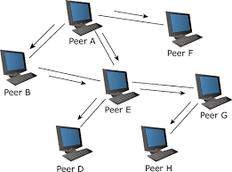

KP-Bittorrent client
KP-Bittorrent client
KP-Bittorrent client
KP-Bittorrent client
The traditional client-server model is obviously not scalable when many clients are requesting single server, this leads us to P2P architecture in which instead of centrailzed server, the peers or clients or end hosts itself participate in distributing data among themself.

Bittorrent is protocol defined for sharing/exchange of data in peer to peer architecture designed by designed by Bram Cohen. The purpose of Bittorrent Protocol or BTP/1.0 was to achieve advantage over plain HTTP when multiple downloads are possible. I would recommend reading this page which gives details about BTP/1.0
Amazon Web Services(AWS) Simple Storage Service(S3) is scalable internet based storage service with interface equipped with built-in Bittorrent.
Facebook uses BitTorrent to distribute updates to Facebook servers.
Major open-source free software support their file sharing using Bittorrent inorder to reduce load on their servers. Example - ubantu iso files.
Government of UK used Bittorrent to distribute the details of the tax money spend by the cittizens.
Fun Fact - In 2011, BitTorrent had 100 million users and a greater share of network bandwidth than Netflix and Hulu combined.
Bittorrent protocol is application layer protocol, since it replies on the services provided by the lower 4 levels of TCP/IP Internet model for sharing the data. It is the application layer where the Bittorrent Client is written such that following a set of rules or protocols it will exchange the data among the peers(ends hosts).
In the project, I have made bittorrent client application program in python3, which follows the Bittorrent protocols for downloading and uploading files among serveral peers.
| Entity Names | Significance | |-------------------|-----------------------------------------------------------------------------------------------------------| | .torrent file | contains details of trackers, file name, size, info hash, etc regarding file being distributed | | Tracker | It keeps the state of file being being shared by which peers and what part of files each peer have | | peers | End systems which may or may not have compelete file but are participating the file distribution | | BTP/1.0 | protocol that end system need to follow inorder to distribute the file among other peers |
Peers participating in file sharing lead into dense graph like structure called swarm. The peers are classified into two types leechers(one who download only) and seeders(one who upload only).
The large file being distributed is divided into number of pieces which inturn is divided into number of different chunks. The data chunks are actually shared among the peers by which the whole file gets downloaded.

.torrent reading : Get .torrent file after that read the .torrent file and decode the bencoded information. From the extracted information get Tracker URLs.
Tracker request : Communicate with the trackers inorder to know which peers are participating in the download. The tracker response contains the peer information which are currently in the swarm.
BTP : communicate with all the peers and using peer wire messages(PWM) and download file pieces from the peers and wirte the pieces in file.
Files have extention .torrent and contain data about trackers to contact, along with some additional information about the orginal file.
Torrent files are bencoded thus one requires to parse the torrent file and extract the information about the orginal file being download. Thus bittorrent client needs write a parser for decoding torrent files.
Torrent files can be generated for single/multiple files being distributed. The given below image is output of the torrent parser in case of single file torrents.